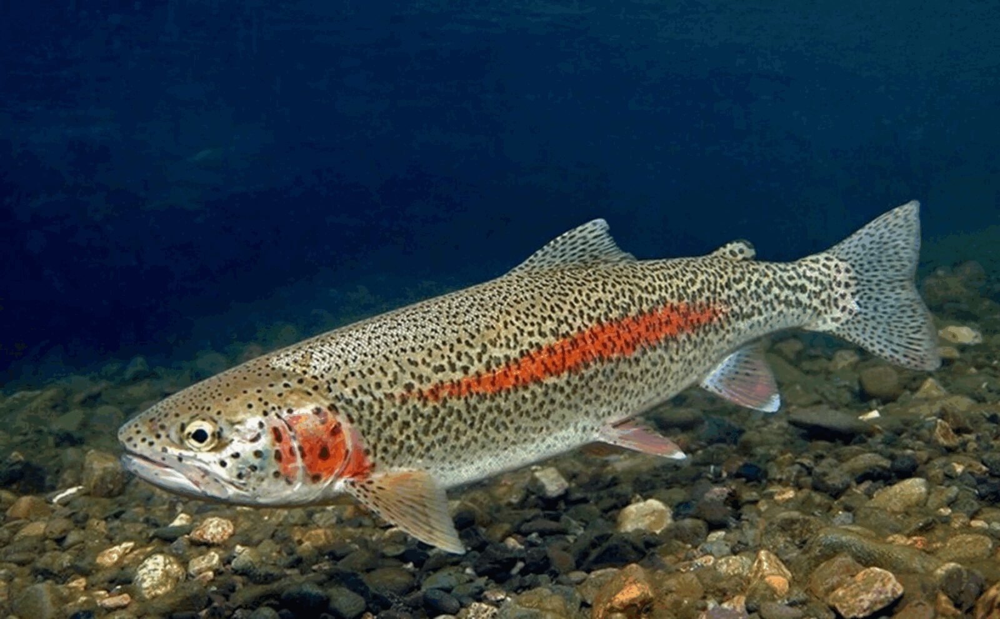

Рыбалка на горных водоёмах – занятие не из простых.
Бурные потоки воды, скользкое каменистое дно Горные реки богаты рыбой, причем весьма разнообразной – это зависит от региона,
где-то преобладает один вид, где-то – другой.
Но чаще всего здесь можно найти ленка, хариуса, сига, тайменя, форель

Форель